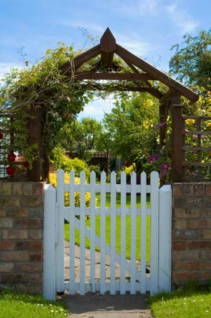

Whether you're building a gate for a wooden privacy fence or building a swinging gate for livestock fencing, there are some basic, but important, things to remember when you're designing and building a gate. Follow these tips to make your gate last longer and reduce maintenance.
We all have a mental image of a gate (or a barn door) in our minds, and most often that image involves a brace that makes a Z-shaped pattern in the gate. Which direction should that brace go? (You didn't know there was going to be a quiz, did you?) The question is this: Should the brace
A. start toward the top of the side nearest the hinges and slope down toward the side with the latch, or
B. start at the bottom of the side nearest the hinges and slope up toward the top of the side with the latch?
If you answered 'B,' you're right! The reason is that the weight of the gate compresses the brace. If you use this method, your gate is much less likely to sag than if gravity is pulling the brace and the hardware holding it together. The brace material will only compress so much before it reaches its limit, but it will stretch out much further.
Quiz question #2: When adding steel cable (or wire) to support a gate, does it follow the cross brace line or does it cross it to make an 'X'?
Answer: The support cable starts toward the top of the side of the gate nearest the hinges and slopes down toward the side with the latch, forming an 'X' with the brace.
Although cable will stretch over time, you can add a turnbuckle in the middle so that you can tighten it as the cable stretches. If you're building a gate for livestock and aren't so concerned with aesthetics, loop wire back and forth so you have several strands and run a short stick between the wires so it's perpendicular to the wires. Then turn the stick several times so that the wires wrap around themselves, becoming tighter with each turn. Be careful when you let go of the stick or it will spin like a propeller ? especially if the wire isn't stiff or if the stick isn't long enough to catch against the gate.
Here's the tricky part. If the pivot point of the hinges isn't on a perfectly straight line, they'll bind and creak as you move the gate. If they're really out of alignment, the gate won't swing at all. If the edge of the gate or post is perfectly straight (check it with a level or square), you can usually simply align the hinges along the edge of the gate or post ? turn them to 90 degrees of being opened and they provide a naturally straight edge to position against the piece you're attaching them to. Using this method generally leaves a small gap between the post and the gate, which reduces pinching.
Another option is to snap a chalk line (or draw a line with a straight edge) and align the hinges accordingly. The gate will swing if the hinges are aligned, but if the pivot points aren't plumb, the gate will likely swing open or closed when you let go of it.
If you want more details on building fences and gates, read the The Gate That Keeps On Swinging and Wood Fences.
|
 ISTOCKPHOTO/FOTOVOYAGER.COM A well-built gate will last for years and can make a fence more attractive. |
|
|